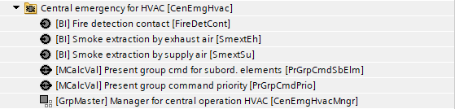
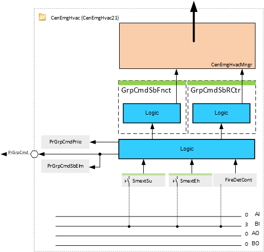
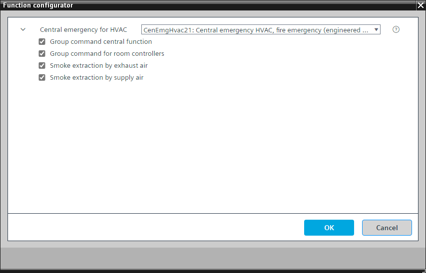

[CenEmgHvac21] 中央紧急情况 HVAC，火灾紧急情况
Program block, name / node subtype: [CenEmgHvac21] Central emergency HVAC, fire emergency
Library hierarchy: Coordination
Family: CenEmgHvac
项目树 | 图表 |
|---|---|
|
 |  |
Configurator


程序块存储在没有 I/Os. 的库中 使用auto-create and auto-connect函数创建 I/Os 和 /or 将它们连接到接口块，例如 R_A、CMD_B。或者，从包含库中预定义 I/Os 的文件夹中取出 I/Os，并从工厂中取出 /or，并将它们连接到接口块。
中央紧急情况 HVAC 和火灾紧急情况
姓名 | 描述 | 类型 | 报警/通知类 | 趋势/类型 | |
|---|---|---|---|---|---|
|
FireDetCont | Fire detection contact | BI：二进制输入 | 是的，4 | No | |
PrGrpCmdSbElm | Present group command for subordinate elements | MCalcVal: Multistate calculated value | N/A | 是的，4 | |
PrGrpCmdPrio | Present group command priority | MCalcVal: Multistate calculated value | N/A | 是的，4 | |
CenEmgHvacMngr | Manager for central operation HVAC | GrpMaster：组经理 | N/A | N/A | |
姓名 | 描述 | 类型 | 报警/通知类 | 趋势/类型 | |
|---|---|---|---|---|---|
SmextEh | Smoke extraction by exhaust air | BI：二进制输入 | 是的，4 | No | |
SmextSu | Smoke extraction by supply air | BI：二进制输入 | 是的，4 | No | |
描述 |
|---|
|
对下级中央职能的集团指挥 |
下属房间控制器的群组命令 |